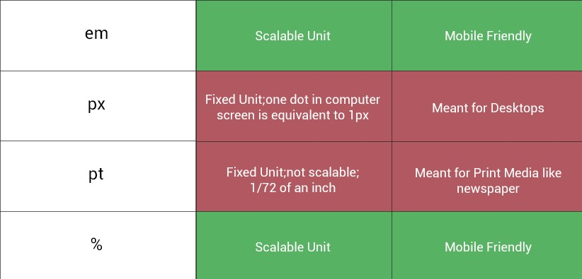
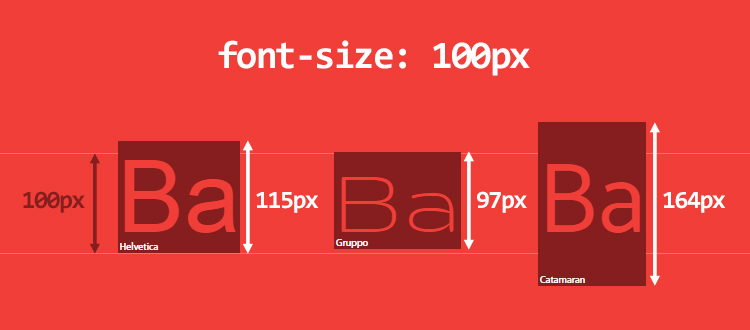
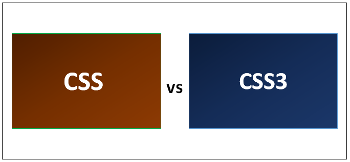

The relevance of using relative size for responsiveness while the browser provides zoom feature

Relative size for responsive websites specify a length relative to another length property. Relative length units scales better between different rendering mediums.
It helps a great deal in making our website interactive and the user shouldn't go through the trouble of adjusting the font while we could have made it dynamic by design.
Although almost all browsers nowadays support a full page zoom if we use absolute size for our text its convenience for usage will decrease. Another point is that responsive
nature of font on our page aids consistency throughout our website. Which means in case of pixels if the page is zoomed the UI doesn't appear the same. If we use relative size
the website appears proportionate either enlarged or not. In addition properties such as margins, padding and line-height do not scale naturally when re-set in-line.
One big reason to stop using pixels is that Bootstrap 4 is dropping pixels for REM. You can see more about why we should stop using pixels here.
March 18,2020 11:05 PM
The meaning of 200px while the browser default width remains 16px and its interpretation

The default font-size of browsers 16px. This means the size of the text when the browser is not instructed any further is set to be 16px.
What this means is if the browse is given another font either in absolute or relative font it will override the default 16px and replace it
with the given new font. When we say 200px for example we give the browser instruction to make that specific text into it. The browser identifies
it as an attribute to the text and resizes it accordingly.
March 18,2020 11:28 PM
Explanation of the specific changes in CSS3

CSS stands for Cascading Style Sheet. Cascading style sheets are used to format the layout of Web pages. They can be used to define text styles,
table sizes, and other aspects of web pages that previously could only be defined in a page's HTML. CSS has different versions and the latest one is
CSS3. It has come with some new feautures accomodating the needs of web designers. Here are some of the changes in CSS3.
- Border Image:- allows you to specify an image to display instead of a plain solid-colored border.
- Box Shadow:- allows you to create a drop shadow for an element. Usually this effect is achieved using a repeated image around the element.
However, with the property box-shadow this can be achieved by writing a single line of CSS code.
- Selectors:- CSS 3 introduces some new selectors. Using these selectors you can choose DOM elements based on their attributes
- Colors:- CSS3 brings with it support for some new ways of describing colours. The color keyword list has been extended in the CSS3
color module to include 147 additional keyword colors like HSL, HSLA, and RGBA.
- RGBA works just like RGB, except that it adds a fourth value:
alpha, the opacity level or alpha transparency level. The first three values still represent red, green, and blue. For the alpha value, 1 means
fully opaque, 0 is fully transparent, and 0.5 is 50% opaque. You can use any number between 0 and 1 inclusively.
- HSL stands for hue, saturation, and lightness. Unlike RGB, where you need to manipulate the saturation or brightness of a color by changing all
three color values in concert, with HSL you can tweak either just the saturation or the lightness while keeping the same base hue. The syntax for
HSL comprises an integer value for hue, and percentage values for saturation and lightness.
- Rounded Corners (Border Radius):- lets you create rounded corners without the need for images or additional markup.
- Drop Shadows:- is the ability to add drop shadows to elements using the box-shadow property. This property lets you specify the
color, height, width, blur, and offset of one or multiple inner and/or outer drop shadows on your elements.
- Linear and Radial Gradients:- allows generation of linear gradients and circular or elliptical gradients. Rather than proceeding along a
straight axis, colors blend out from a starting point in all directions.
- Multiple Background Images:- provides us with the ability to add more than one background image to any element, even to pseudo-elements.
March 18,2020 11:43 PM